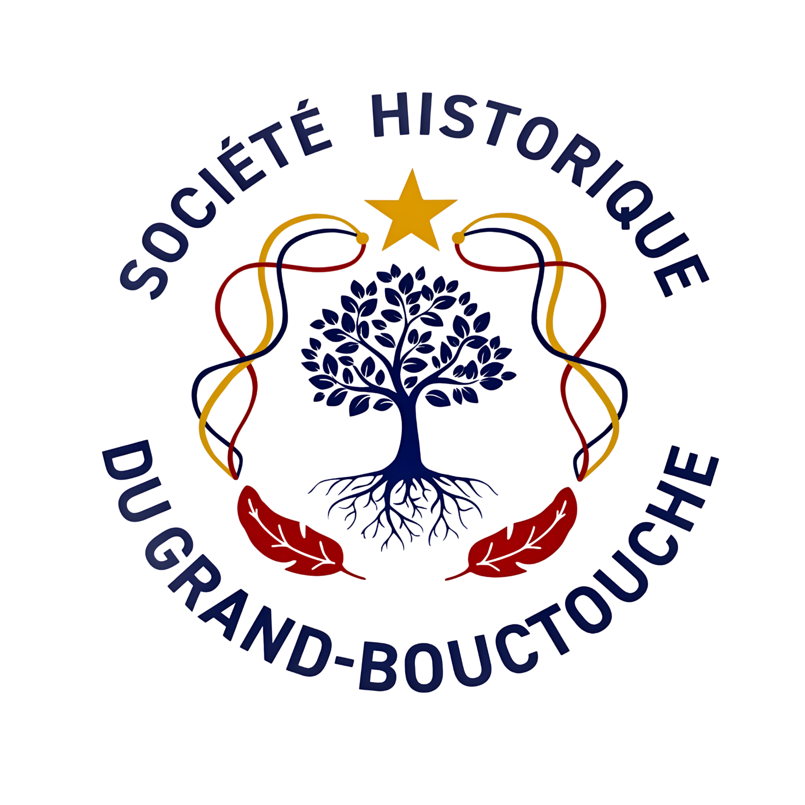

Grand-Bouctouche · Nouveau-Brunswick
Nos mémoires sont vivantes.
Honorer les personnes, les lieux et les récits qui ont bâti le Grand-Bouctouche.
Partager cet héritage vivant avec les générations d'aujourd'hui et de demain.
Unir les citoyens autour d'une mémoire collective partagée.
Mission & Identité
La Société Historique du Grand-Bouctouche est née de l'engagement de citoyennes et citoyens convaincus que leur région mérite d'être racontée, célébrée et transmise. Organisation citoyenne et non commerciale, elle documente l'histoire vivante du Grand-Bouctouche, au Nouveau-Brunswick.
Chaque témoignage recueilli est une victoire pour notre communauté. Chaque photo partagée, chaque document confié — c'est notre identité collective qui prend forme et qui rayonne.
Nos trois engagements fondamentaux
Honorer les personnes, les lieux et les récits qui ont bâti le Grand-Bouctouche, avec fierté et gratitude.
Partager cet héritage vivant avec les générations d'aujourd'hui et de demain, pour qu'il continue de rayonner.
Unir les citoyens autour d'une mémoire collective partagée, source d'appartenance et d'identité commune.
« Connaître son passé, c'est savoir d'où l'on vient —
et se donner les moyens de choisir où l'on va. »
Domaines couverts
L'arrivée des premiers policiers, la mise en place de la garde civile et l'histoire de l'ordre public qui a permis à notre communauté de s'épanouir.
La vie culturelle bouctouchoise dans toute sa vivacité : théâtre amateur, musique traditionnelle, artisanat et festivités qui font vibrer notre région.
Les équipes, les champions et les moments de fierté collective qui ont uni les familles du Grand-Bouctouche autour d'une passion commune.
Les écoles, les enseignants dévoués et les institutions d'apprentissage qui ont façonné des générations de citoyens engagés.
La vie paroissiale, les communautés religieuses et le rôle essentiel du clergé dans le tissu social et culturel de notre région.
La relation profonde de notre communauté avec la mer : les homardiers, les familles de pêcheurs et les traditions maritimes qui nous définissent.
Les terres cultivées avec passion, les familles paysannes et l'évolution des pratiques agricoles qui ont nourri et bâti notre région.
Les entrepreneurs d'époque, les premiers commerces et l'économie locale qui ont permis au Grand-Bouctouche de prospérer et de grandir.
« Ces huit chapitres ne sont pas des catégories — ce sont des portraits de familles, de voisins, de bâtisseurs. C'est notre histoire. »
L'équipe fondatrice
La Société Historique du Grand-Bouctouche est née de l'engagement de six citoyennes et citoyens qui ont répondu à l'appel avec conviction.
Présidente fondatrice
Membre fondateur
Membre fondateur
Membre fondateur
Membre fondateur
Membre fondateur · Conseiller municipal
« Notre mémoire est un trésor vivant. Chaque geste posé en son nom la rend plus lumineuse. »
Archives vivantes
Des témoins précieux nous confient leurs récits pour les générations futures. Chaque entrevue est un trésor de mémoire collective.
Sécurité publique
Témoignage de Robert Landry sur les premiers corps policiers de la région.
Culture & Arts
Entrevue avec Marie-Anne Thibodeau, musicienne et dépositaire du répertoire local.
Sports
Souvenirs de la ligue locale et des équipes qui ont marqué les années 1960–1980.
Éducation
Récits d'anciens élèves et d'enseignants sur l'éducation française en Acadie.
Pêches
Les pêcheurs du Grand-Bouctouche racontent leurs saisons en mer.
Agriculture
Témoignages sur la vie agricole avant la mécanisation.
Religion
L'histoire de notre paroisse racontée par l'abbé Cormier et des paroissiens.
Industrie & Commerce
Entrevue avec les descendants des familles fondatrices du commerce local.
Société Historique du Grand-Bouctouche · Grand-Bouctouche, Nouveau-Brunswick · 2025 ✦